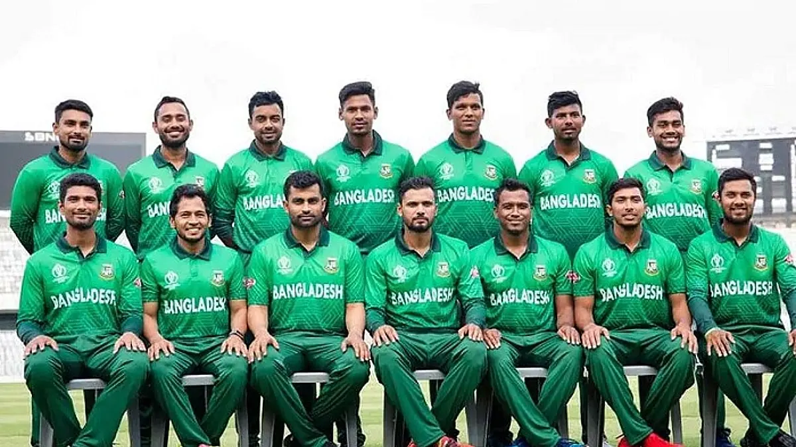

The Bangladesh men's national cricket team (Bengali: বাংলাদেশ জাতীয় ক্রিকেট দল), popularly known as The Tigers,[12] is administered by the Bangladesh Cricket Board (BCB). It is a Full Member of the International Cricket Council (ICC) with Test, One-Day International (ODI) and T20 International (T20I) status. It played its first Test match in November 2000 against India with a 9 wicket loss in Dhaka, becoming the tenth Test-playing nation.[13][14][15][16][17] Bangladesh became an associate member of the ICC in 1977,[18] and competed in six ICC Trophies, the leading ODI competition for non-Test playing nations.
Bangladesh's first official foray into international cricket came in the 1979 ICC Trophy in England. On 31 March 1986, Bangladesh played its first ODI match, against Pakistan in the Asia Cup. For a long time, football was the most popular sport in Bangladesh, but cricket gradually became very popular – particularly in urban areas – and by the late 1990s had surpassed football. Bangladesh made its full debut in international cricket in the 1986 Asia Cup. In 1997, Bangladesh won the ICC Trophy in Malaysia and thus qualified for its first Cricket World Cup to participate in England in 1999. There, it defeated Pakistan – causing much upset – and also Scotland. On 26 June 2000, Bangladesh was granted full ICC membership.[19][20][21][22][23] Bangladesh holds the record for most consecutive losses in Tests (21, between 2000 and 2002) and ODIs (23, between 2001 and 2004). After gaining Full Member status with the ICC, Bangladesh had to wait until 2004 for its first ODI win since the 1999 World Cup. The team on the losing side on that occasion was Zimbabwe, who also participated in Bangladesh's maiden Test victory in 2005; by securing a draw in the second match, Bangladesh won their first Test series. In 2009 Bangladesh toured the West Indies for two Tests and by winning both secured their first overseas Test series victory. They then came back to the Caribbean in 2014 for another 2 match test series and the West Indies claimed revenge on Bangladesh for that 2-test series loss that they gave them 5 years earlier by defeating in both test matches. As of 17 June 2023, Bangladesh has played 138 Tests, winning 18. Its first victory was against Zimbabwe, and the next two came against the West Indies. Results have improved predominantly at home with draws earned against Pakistan, India and South Africa and wins against England, Sri Lanka, New Zealand and Australia.[24] They played their 100th Test when they toured Sri Lanka in March 2017 which they won by 4 wickets.[25][26][27][28][29][30] As of 14 May 2023, the team has won 151 of its 412 matches.[31] They played their 100th ODI[32][33] when India toured Bangladesh in December 2004 which they won, 200th ODI when Bangladesh toured West Indies in 2009 which they won and 300th ODI[34] in the quarter-final of the 2015 ICC Cricket World Cup against India. They got their 100th ODI win when Afghanistan toured Bangladesh in October 2016.[35][36] Bangladesh have also played 150 T20Is, winning 54.[37] They played their 100th T20I against Zimbabwe in July 2021 which they won.[38][39] Results have improved with wins against Pakistan, India, Sri Lanka, Australia, New Zealand and West Indies.[40] Bangladesh's major achievements include reaching the semi-finals in 2017 ICC Champions Trophy, the quarter-finals in 2015 ICC Cricket World Cup, being runners up in three Asia Cups (in 2012, 2016 and 2018) and in 2018 Nidahas Trophy and winning 2019 Ireland Tri-Nation Series which was Bangladesh's first ever multi-team ODI tournament final win. As of 4 March 2023, Bangladesh is ranked 9th in Tests, 7th in ODIs and 9th in T20Is by the ICC.[41] History Main article: History of cricket in Bangladesh 20th century Several East Pakistan-based sides played in Pakistani domestic cricket prior to Bangladesh's declaration of independence of 1971—the East Pakistan cricket team fielded three players who later played ICC Trophy matches. In 1977, Bangladesh became an Associate member of the International Cricket Council (ICC).[42] Bangladesh was one of fifteen teams to take part in the inaugural ICC Trophy. Held in 1979, it gave non-Test playing countries the opportunity to qualify for that year's World Cup. Bangladesh, under the captaincy of Raqibul Hasan, won two matches and lost two, but failed to progress beyond the first round.[43][44] Victory in the South-East Asian Cricket Conference Tournament in February 1984 ensured Bangladesh qualified for the 1986 Asia Cup.[45] On 31 March 1986, Bangladesh played their first One Day International against a Full Member of the ICC.[46] 31 March 1986 Scorecard Bangladesh 94 all out (35.3 overs) v Pakistan 98/3 (32.1 overs) Shaheedur Rahman 37 (60) Wasim Akram 4/19 (9 overs) Mudassar Nazar 47 (97) Jahangir Shah 2/23 (9 overs) Pakistan won by 7 wickets Tyronne Fernando Stadium, Moratuwa, Sri Lanka Umpires: Herbi Felsinger (SL) and PW Vidanagamage (SL) Player of the match: Wasim Akram Captained by Gazi Ashraf, Bangladesh were dismissed for 94 and Pakistan reached their target for victory with seven wickets in hand.[47] They lost their second ODI, which was against Sri Lanka, finishing last in the three-team tournament.[48] Bangladesh qualified for the 1988 Asia Cup, this time hosting the tournament; it was the first time ODIs had been staged in the country. Although they lost all their matches, Bangladesh's fixtures were retrospectively awarded ODI. Floods in the preceding months meant the tournament was in doubt, but it went ahead as planned. A charity match raised $70,000 for the flood victims.[49] Bangladesh added a black mark in 1986 ICC Trophy with only 2 wins. Bangladesh took part in the 1990 Austral-Asia Cup,[50] the Asia Cup in 1990–91, 1995,[51] 1997,[52] and several other triangular tournaments, but it was not until 1998 that they won their first ODI. Their 22-match losing streak since their first ODI was at the time a record.[53] 16 May 1998 Scorecard Kenya 236 all out (49 overs) v Bangladesh 237/4 (48 overs) Ravi Shah 52 (64) Mohammad Rafique 3/56 (10 overs) Mohammad Rafique 77 (87) Mohammad Sheikh 2/46 (10 overs) Bangladesh won by 6 wickets Lal Bahadur Shastri Stadium, Hyderabad, India Umpires: SK Sharma (Ind) and C. R. Mohite[54] (Ind) Player of the match: Mohammad Rafique Bangladesh posted its first ODI win against Kenya, in India thanks largely to Mohammad Rafique, who contributed a fiery 77 runs and took 3 wickets. Put on 137 for the first wicket with Athar Ali Khan whose own contribution was 47.[55] In October 1998, Bangladesh hosted (but did not participate in) the first ICC KnockOut Trophy ever held (the event later became the ICC Champions Trophy), a knock-out ODI tournament featuring all the Test playing nations. Bangladesh took part in each of the 1979, 1982, 1986, 1990, and 1994 editions of the ICC Trophy, and won the trophy in 1997, in the process qualified for the 1999 World Cup. The then General Secretary of Bangladesh Cricket Board, Aminul Huq Moni took the initiative to install Astro Turf in Abahani Cricket Ground and Bangabandhu National Stadium, so that the local players had two full seasons to prepare on the type of pitch they would playing in ICC Trophy in 1997.[56] Bangladesh also became a regular ICC member with the right to play ODIs and started hosting bilateral and triangular ODI tournaments. Earlier, in February Dhaka hosted the third and final SAARC cricket tournament. Bangladesh played in its first World Cup in England in 1999 and recorded their first win in a World Cup match against Scotland. Later Bangladesh created an enormous upset by beating Pakistan by 62 runs in the group match at Northampton. Bangladesh made 9/223 from its full 50 overs, and in reply, Pakistan could only manage 161 due to timely run-outs by wicket-keeper Khaled Mashud and some tight bowling by Khaled Mahmud, who took 3/31 from 10 overs. Mahmud was judged the man of the match. Bangladesh did not qualify for the Super Six round due to defeats in three of its five matches. However, the win over Pakistan, who finished runners-up to Australia, helped Bangladesh to gain Test playing status the following year. Bangladesh had sacked coach Gordon Greenidge, who had steered the team through the 1997 ICC Trophy and into the 1999 World Cup on the morning of the match.[53] Former South Africa Test cricketer Eddie Barlow became Bangladesh's coach in 1999.[57] In preparation for becoming a Test playing country, Bangladesh established its own first-class competition in 1999–2000, although the matches were not given first-class status until the 2000–2001 season.[58] The lack of an established first-class structure in the country until shortly before Bangladesh played its debut Test has been cited as one of the reasons the side struggled to adapt to the longer format of the game.[59] The West Indies toured Bangladesh in October, winning both matches in the ODI series.[60] After suffering a stroke in April 2000, Barlow vacated the position of coach[61] and Sarwar Imran was handed the coaching job.[62] In May and June 2000, Bangladesh hosted the Asia Cup; Bangladesh lost all three of their matches and playing against Pakistan Bangladesh recorded the heaviest defeat in ODIs, a margin of 233 runs at the time.[63] Bangladesh participated in the 2000 ICC KnockOut Trophy in October; their only match ended in defeat by England.[61] First years as a Test team (2000–2003) On 13 November 2000, Bangladesh played their inaugural Test match, hosting India in Dhaka. 10–13 November 2000 Scorecard Bangladesh v India 400 (153.3 Overs) Aminul Islam Bulbul 145 (380) Sunil Joshi 5/142 (45.3 Overs) 429 (141.3 Overs) Sunil Joshi 92 (180) Naimur Rahman 6/132 (44.3 Overs) 91 (46.3 Overs) Habibul Bashar 30 (63) Javagal Srinath 3/19 (11 Overs) 64/1 (15 Overs) Rahul Dravid 41 (49) Hasibul Hossain 1/31 (6 Overs) India won by 9 wickets Bangabandhu National Stadium, Dhaka Umpires: Steve Bucknor (WI) and David Shepherd (ENG) Player of the match: Sunil Joshi Bangladesh won the toss and elected to bat Sameen Ishraq, Akram Khan, Al Sahariar, Aminul Islam Bulbul, Habibul Bashar, Khaled Mashud, Mehrab Hossain, Mohammad Rafique, Naimur Rahman, Ranjan Das, Hasibul Hossain and Shahriar Hossain made their Test debuts for Bangladesh. Shiv Sunder Das, Saba Karim and Zaheer Khan made their debuts for India. Aminul Islam Bulbul became third cricketer in history to score a century on his country's inaugural test.[64] The first Test run in the history of Bangladesh Cricket came from the bat of Mehrab Hossain, who also scored the first ODI hundred by an individual player for Bangladesh in 1999. Captained by Naimur Rahman, Bangladesh lost by nine wickets, although Wisden noted that they "surpassed all expectations by matching their neighbours, and at times even enjoying the upper hand".[65] Aminul Islam Bulbul scored 145 in the first innings, becoming the third person to have scored a century in their team's first Test; Rahman took six wickets for 132 runs, the second-best bowling figures in a country's maiden Test.[65] In March 2001, former Australian Test cricketer Trevor Chappell was appointed coach.[66] The following month Bangladesh embarked on a tour of Zimbabwe to play two Tests and three ODIs. Zimbabwe, who at the time were ranked ninth out of the ten Test teams, won all five matches.[67] Bangladesh took part in the 2001–02 Asian Test Championship, the second and final time the championship was held and the first the team had been eligible to play in. They lost both their matches by an innings. Mohammad Ashraful made his debut in the series and became the youngest player to score a Test century in his first match.[68] In November, Bangladesh hosted Zimbabwe for two Tests and three ODIs. The opening Test was curtailed by bad weather and ended in a draw; after losing their first five Tests, it was the first time Bangladesh had avoided defeat. Zimbabwe won all the remaining matches. After the Test series wicketkeeper Khaled Mashud replaced Rahman as captain.[69] The following month Bangladesh toured New Zealand for two Test matches. Bangladesh's batsmen struggled in unfamiliar conditions and the team slumped to two innings defeats.[70] In January 2002, Bangladesh hosted Pakistan for two Tests and three ODIs where Bangladesh lost all the matches. At this point, they had lost ten of their first eleven Tests; only South Africa had struggled as much in their introduction to Test cricket, also losing ten of their first eleven matches. Chappell blamed Bangladesh's batsmen for the loss, saying "they commit the same mistakes again and again, and need to learn to apply themselves, to bat in sessions".[71] In April, former Pakistan Test cricketer Mohsin Kamal replaced Chappell as coach.[66] When Bangladesh toured Sri Lanka in July and August they were on the receiving end of Sri Lanka's largest margin of victory in Test cricket: an innings and 196 runs. Bangladesh lost both Tests and all three ODIs on the tour, recording their 50th defeat in 53 ODIs. Repeated poor performances prompted people to question whether Bangladesh had been granted Test status too soon.[72] Two defeats against Australia and New Zealand in pool matches knocked Bangladesh out of the 2002 ICC Champions Trophy. In October, Bangladesh got whitewashed in both Test and ODI series against in South Africa.Wisden noted that "Time and again ... came the mantra that [Bangladesh] would learn from the experience, that they could only improve by playing against the best, that there was genuine talent in the squad. But it wore thin."[73] The final defeat set a record for most consecutive losses in ODIs (23), beating the previous record, which was also held by Bangladesh.[74] When West Indies toured in November and December, Bangladesh lost both Test and two out of the three ODIs, and one ended in no result.[75] Bangladesh hit several new lows on the third day of the first Test: their lowest innings total (87), their lowest match aggregate (226), and the biggest defeat in their 16 Tests (by an innings and 310 runs).[76] South Africa hosted the 2003 World Cup in February and March. Bangladesh lost five of their six matches (one ended in no result),[77] including fixtures against Canada, who hadn't played international cricket since the 1979 World Cup,[78] and Kenya, who eventually made the semi-finals of the tournament. In the aftermath of Bangladesh's World Cup campaign, Habibul Bashar replaced Khaled Mashud as captain,[79] and Kamal was sacked as coach with Dav Whatmore taking over the role.[80] Whatmore was not able to begin the job immediately, so Sarwar Imran acted as interim coach during TVS Cup and South Africa's tour of Bangladesh in April and May.[81] Bangladesh lost all four ODIs by large margins and two Tests by innings. Under Dav Whatmore (2003–2007) Bangladesh played two Test and three ODI matches on a mid-year tour of Australia in 2003.They lost every single match on that tour. In August 2003, Bangladesh toured Pakistan to play three Tests and five ODIs matches. This was Bangladesh's second tour to Pakistan, with the first occurring in 2001–02, when the teams played one Test match. Both series ended in whitewash, with Pakistan winning the Test series 3 – 0 and the ODI series 5 – 0.[82][24][83] In the first Test match of that series, Alok Kapali became the first Bangladesh player to take a hat-trick in Test cricket, dismissing Shabbir Ahmed, Danish Kaneria, and Umar Gul.[84][85] However, in the third Test match of that series, Bangladesh came very close to its first Test victory, when it lost to Pakistan by only one wicket. It was just the tenth time in Test history that a team had lost by a single wicket.[86] In September–October 2003, England played 2 Tests and 3 ODIs against Bangladesh. England won both the Test matches and won all three ODIs by 7 wickets. Bangladesh's captain, Mahmud, was booed.[87] Ahead of Bangladesh's tour of Zimbabwe in February and March the next year, he was dropped from the squad and batsman Habibul Bashar was granted the captaincy.[88] At the time, Zimbabwe were without many of their senior players. Bangladesh lost the Test series 1–0, and the ODI series 2–1.[89] The second Test was drawn after 3 days of no play due to heavy rains[90] and brought an end to their run of 21 consecutive defeats dating back to November 2001, a world record in Test cricket.[91] The solitary ODI victory was Bangladesh's first international win since defeating Pakistan in the 1999 World Cup.[92] Bangladesh's next matches were against the West Indies in May and June. Bangladesh lost the ODI series 3–0 and the Test series 1–0; by securing a hard-fought draw in the first match, Bangladesh managed to avoid defeat for just the third time in 29 Tests.[93] Bangladesh participated 2004 Asia Cup and 2004 ICC Champions Trophy winning only one match against Hong Kong. In the following months, Bangladesh suffered heavy defeats in Tests and in ODIs against touring New Zealand and India. However, in December, India toured Bangladesh in December 2004. In 2nd ODI of the series, Bangladesh defeated India in its hundredth ODI, this being only the third time that it had won against a Test playing nation.